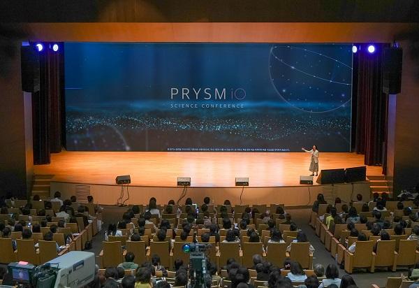
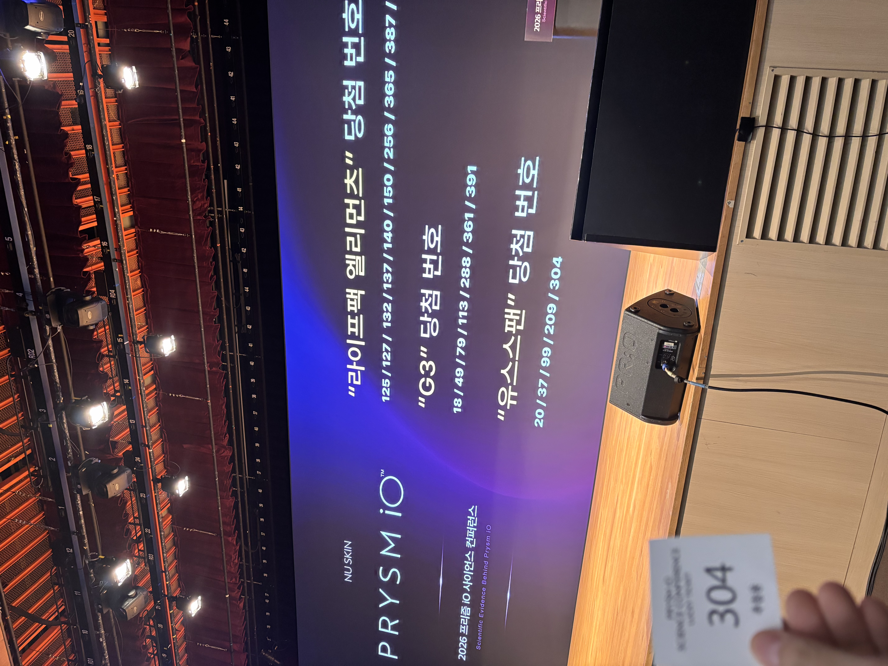
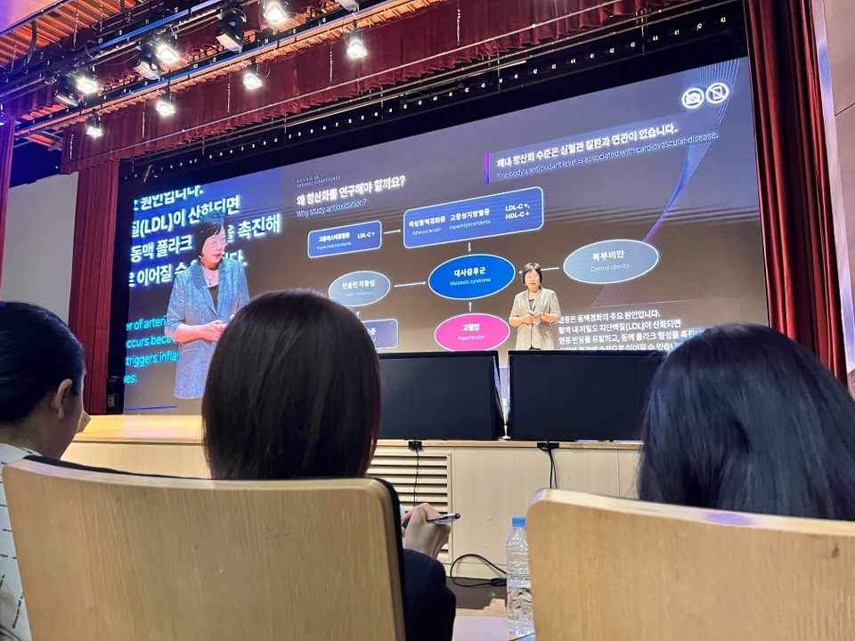

피부 카로티노이드 측정 기술의 과학적 검증부터
연세대·상하이교통대 임상 연구 결과까지

Dr. Helen Knaggs · NSE (Nu Skin Enterprises)
PRISM iO는 여러분이 뉴스킨의 파마넥스 제품들을 더욱 효과적으로 활용할 수 있도록 돕는 도구입니다. 건강기능식품은 스킨케어 제품과 함께, 뉴스킨 디바이스와 함께 작용하여 최적의 건강과 웰니스를 경험하게 합니다.
뉴스킨은 탐구하는 것을 좋아합니다. 우리는 과학자들입니다. 가장 먼저 하는 일은 과학을 이해하는 것이고, 두 번째는 여러분의 건강 상태를 이해하는 것입니다. 뉴스킨은 여러분이 스스로 건강을 관리하고 미래를 설계할 수 있도록 도구와 솔루션을 모두 제공합니다.
"노화를 잘 관리하는 것은 단 하나의 행동으로 해결되는 것이 아닙니다. 중요한 것은 균형입니다."
— Dr. Helen Knaggs, NSEPRISM iO 개발 과정에서 매우 유리했던 점은 뉴스킨이 이미 훌륭한 출발점을 가지고 있었다는 것입니다. 뉴스킨은 독자적인 기술을 보유하고 있었으며, 20년이 넘는 기간 동안 피부 카로티노이드 수치를 측정해 왔습니다. 이것이 새로운 플랫폼을 구축할 수 있었던 과학적 기반이 되었습니다.
연구와 논문 발표를 통해 카로티노이드는 피부 건강뿐 아니라 눈 건강, 뇌 기능, 신체 기능 전반에 중요한 역할을 한다는 사실을 확인했습니다. 또한 건강하게 나이 들어가는 데 매우 중요한 요소라는 것도 밝혀냈습니다. 이러한 지식과 이해는 뉴스킨을 시장에서 매우 독특한 위치에 올려놓았습니다. 이런 종류의 데이터를 보유한 기업은 거의 없기 때문입니다.
카로티노이드는 매우 독특한 화학물질입니다. 가장 중요한 사실은 — 우리 몸은 카로티노이드를 스스로 만들어낼 수 없다는 것입니다.
오직 과일과 채소를 통해서만 섭취할 수 있습니다. 그런데 카로티노이드는 우리 몸이 정상적으로 기능하고 건강하게 노화하기 위해 매우 중요한 역할을 합니다. 문제는 현대인의 식단이 충분한 카로티노이드를 공급하지 못한다는 것입니다.
한국은 비교적 건강한 식단을 가지고 있지만, 그럼에도 불구하고 우리 몸이 최적의 상태로 기능하기 위해 필요한 수준까지는 충분하지 않을 수 있습니다. 그래서 영양 보충은 식단을 보완하는 매우 좋은 방법이 됩니다.
"각각의 색깔을 가진 과일과 채소는 서로 다른 카로티노이드를 제공합니다. 그리고 각 카로티노이드는 몸 안에서 서로 다른 역할을 수행합니다. 바쁜 생활, 스트레스 등으로 매일 충분한 양의 과일과 채소를 섭취하기 어려울 때 좋은 품질의 영양 보충제가 도움이 됩니다."
— Dr. Helen Knaggs, NSE인체의 정상적인 대사 과정에서는 자유 라디컬이 생성됩니다. 자유 라디컬은 짝을 이루지 못한 전자를 가진 불안정한 물질로, 다른 분자들과 강하게 반응하려는 성질이 있습니다. 체내에 자유 라디컬이 과도하게 쌓이면 세포를 공격하고 면역력을 약화시키며, 노화와 질환으로 이어질 수 있습니다.
"자유 라디컬에는 여러 종류가 있으며, 각각 다른 화학적 특성과 반응성을 가집니다. 하나의 항산화 성분만으로는 충분한 보호 효과를 기대하기 어렵습니다. 다양한 항산화 성분이 풍부한 식품을 균형 있게 섭취하는 것이 중요합니다."
— 항산화 연구 강의 중질병과 노화는 연령, 성별, 유전자, 생활습관, 식습관 등 다양한 요인이 복합적으로 작용한 결과입니다. 특히 카로티노이드와 같은 식물성 항산화 물질은 질병 예방에 중요한 역할을 할 수 있습니다.
신체 활동과 과일·채소 섭취는 세포 노화를 지연시키는 데 도움을 줄 수 있습니다. 과일과 채소에 포함된 다양한 식물 영양소는 체내 보호 인자로 작용해 자유 라디컬을 제거하고 세포 손상을 완화합니다.
피부 속 카로티노이드 수치는 인체의 항산화 상태를 반영하는 중요한 지표입니다. 피부 카로티노이드 함량을 측정하면 체내 항산화 능력을 간편하고 효과적으로 평가할 수 있습니다.
기존 스캐너는 손바닥을 측정했지만 PRISM iO는 손가락을 측정합니다. 첫 번째 과제는 "손가락이 카로티노이드 측정에 적합한 부위인가?"를 검증하는 것이었습니다. 실험 결과, 손바닥 측정값과 손가락 측정값의 상관계수(R²)는 0.93으로 1에 매우 가까운 수치가 나왔습니다. 손가락 측정값이 손바닥 측정값과 매우 높은 일치도를 보인다는 것이 입증되었습니다.
다음 단계는 혈액 속을 순환하는 카로티노이드와의 상관관계를 확인하는 것이었습니다. 결과는 매우 강한 상관관계를 보여주었습니다. 즉, PRISM iO가 측정하는 손가락의 카로티노이드 수준은 실제로 몸 전체를 순환하는 카로티노이드 수준을 잘 반영한다는 사실을 확인했습니다.
초기 연구 당시에는 큰 프로토타입 장비를 사용하고 있었습니다. 뉴스킨은 6S 제품 개발 프로세스를 통해 최종 제품이 완성된 후에도 추가 검증을 진행했습니다. 성인 100명을 대상으로 PRISM 점수와 혈액 내 카로티노이드 수치를 비교한 결과, PRISM iO는 혈액 내 카로티노이드 수준과 매우 높은 상관관계를 보였고 기존 S3 스캐너와 동등한 성능을 입증했습니다. 이 연구는 2026년에 발표된 최신 연구입니다.
뉴스킨의 강점은 연구 결과를 매우 빠르게 제품 개발에 적용한다는 점입니다. 우리는 빠른 개발 속도로 최신 혁신을 여러분에게 제공합니다.
PRISM iO는 단순히 피부 속 카로티노이드를 측정하는 장치가 아닙니다.
※ PRISM iO는 의료기기가 아니며 질병 예측이나 진단 목적으로 사용할 수 없습니다. 그러나 측정 결과는 개인의 식습관과 생활 방식을 조정하고 전반적인 건강 관리를 돕는 유의미한 정보로 활용될 수 있습니다.
연대기적 나이(Chronological Age)는 실제 나이입니다. 생물학적 나이(Biological Age)는 몸이 실제로 얼마나 늙었는지를 의미합니다. 만약 생물학적 나이가 실제 나이보다 젊다면, 그 사람은 건강하게 나이 들고 있다는 뜻입니다.
실제 나이가 비슷한 두 여성을 비교한 연구에서, PRISM 점수 차이가 외모에도 그대로 드러났습니다.
"카로티노이드는 피부뿐 아니라 눈, 뇌, 심혈관계, 전신 건강과 관련된 중요한 항산화 영양소입니다. 그래서 PRISM은 단순히 손가락의 카로티노이드를 측정하는 기기가 아니라, 전반적인 영양 웰니스 상태를 보여주는 건강 지표라고 볼 수 있습니다."
— Dr. Helen Knaggs, NSE건강은 하루아침에 만들어지지 않습니다. 우리 몸이 변화하려면 지속적이고 일관된 행동이 필요합니다.
IC Korea × 연세대학교 심리학과 공동 연구 | 발표: IC Korea 조정희 연구원
IC Korea(현 SGS 그룹)는 1990년 프랑스 리옹에서 출발한 화장품 인체 적용 시험 전문 다국적 기업입니다. 전 세계 7개 국가 8개의 실험실을 운영했으며, 2024년 SGS 그룹과 합병하여 현재 전 세계 19개 국가 27개의 실험실을 운영하고 있습니다. 다년간의 임상 연구 경험과 글로벌 네트워크가 뉴스킨과의 협업 연구 배경이 되었습니다.
화장품 분야에서는 '인체 적용 시험', 의약품에서는 '임상 연구'라고 부르지만 본질은 같습니다. 제품의 안전성과 유효성을 증명할 목적으로 사람을 대상으로 실시하는 연구입니다. 생명윤리법, 개인정보보호법, 식약처 고시 가이드라인, Helsinki 선언문 및 GCP 가이드라인을 철저히 준수하여 진행됩니다.
연세대학교 심리학과 김한조 교수 연구팀과 협업했습니다. 김한조 교수팀은 경험적 증거에 기반한 지능 예방 과학을 연구하며, 심리 측정, 유사 실험 생존 분석을 전문으로 합니다. 다방면의 심리 연구 네트워크를 보유하고 있습니다.
시험 제품(라이프팩 옵티멀)과 대조 제품(탄수화물 기반 말토덱스트린 캡슐) 모두 블라인드 처리되어 제공되었습니다. 피험자와 연구자 모두 어떤 제품인지 알지 못한 채 실험을 진행했습니다. 이는 심리적 선입견이 설문 결과에 영향을 미치는 것을 방지하기 위한 표준 절차입니다. (예: '로레알 제품'이라고 알려주면 긍정 평가율이 높아지는 효과를 방지)
시험 제품에는 멀티비타민, 미네랄, 식물 유래 항산화 성분, 비타민 나이아신, 파이타테산 등 다양한 성분이 함유되어 있습니다.

스펙트로 포토미터를 이용해 얼굴 뺨 부위에서 피부색의 밝기(L*), 붉은기(a*), 노란기(b*)를 측정했습니다. 팔, 얼굴, 바디 등 다양한 부위에서 측정 가능하며, 0주·4주·8주 3회 측정으로 변화를 추적했습니다. 주관적 설문 결과를 기기 측정으로 뒷받침하기 위해 병행 실시되었습니다.
"PRISM iO 측정이 심리 설문 결과, 피부색 밝기·붉은기 완화와 서로 상관관계가 있음을 확인했습니다. 카로티노이드 함량 증가가 실제로 체감할 수 있는 건강 변화로 이어진다는 것을 이번 연구가 보여줍니다."
— IC Korea 조정희 연구원상하이교통대학교 Prof. Maiqin Cai · 600명 대규모 횡단면 관찰 연구

600명이 참여한 대규모 횡단면(단일 시점 측정) 관찰 연구입니다. 연구 목표는 PRISM iO를 활용해 참여자의 피부 카로티노이드 수치를 측정하고, PRISM 점수와 식습관, 생활습관, 건강 관련 삶의 질 사이의 상관관계를 분석하는 것이었습니다. 전문 측정 장비와 표준화된 설문지를 통해 데이터를 수집하고 통계 분석을 진행했습니다.
PRISM 점수는 피부 건강 지표와도 유의미한 상관관계를 보였습니다. 피부의 매끄러움, 주름 상태, 수분감 등이 PRISM 점수와 관련이 있었습니다.
특히 PRISM 점수 4,000 이상인 경우 피부 상태가 더 양호한 경향을 보였습니다. 피부가 더 부드럽고 수분감이 좋았으며 주름은 적었습니다.
PRISM 점수는 개인의 건강 상태를 비추는 거울과 같습니다. 식습관, 수면, 신체 활동, 자외선 노출 같은 생활습관뿐 아니라 체중, 체지방, 대사 건강, 위장관 건강, 면역 건강, 피부 상태, 사회적·정서적 웰빙까지 다양한 요소와 연관되어 있었습니다. 이번 연구는 PRISM 점수가 신체 건강뿐만 아니라 정신적·사회적 웰빙까지 통합적으로 반영할 수 있음을 보여주었습니다.
뉴스킨 파마넥스의 LifePak® Optimal은 식물 유래 카로티노이드를 포함한 33가지 영양소를 과학적으로 배합한 제품입니다. 8주 임상 연구에서 PRISM iO로 측정한 체내 카로티노이드가 4주·8주 모두 유의하게 증가하는 것이 확인되었습니다.
"라이프팩 옵티멀은 섭취 편의성은 높였지만, 과학적 설계의 완성도는 포기하지 않은 업그레이드 비타민입니다."
— NSK 정원영 Pro우리 몸을 올바르게 이해하고 건강하게 관리한다면, 더 건강하고 더 오래, 더 활기차게 살아갈 수 있습니다. PRISM iO는 현재 상태를 측정하고, 건강한 행동 변화를 습관으로 만들도록 돕는 도구입니다. 뉴스킨은 여러분이 자신의 잠재력을 실현하도록 돕고자 합니다.